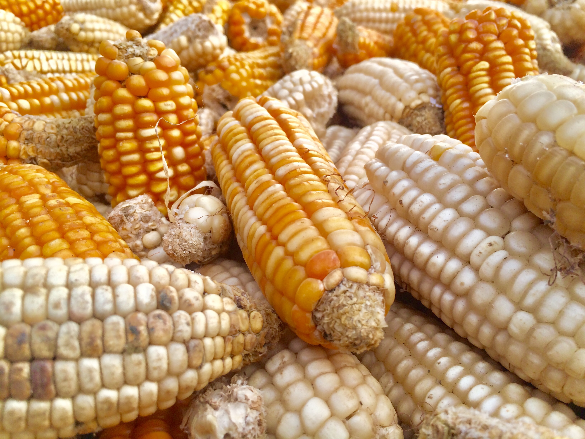

About Maize
Maize, commonly known as corn, is one of the most widely cultivated cereal crops in the world. It is a staple food in many cultures and is used for a variety of purposes, from food to livestock feed to industrial products. Maize is known for its versatility and adaptability to different climates.
Steps to Grow Maize
- Choose a sunny location with well-drained soil and a moderate climate for maize cultivation.
- Prepare the soil by tilling and adding organic matter to improve fertility.
- Sow maize seeds directly in the field after the last frost date, spacing them properly in rows.
- Keep the soil consistently moist, especially during the growing season, as maize requires ample water.
- Fertilize the plants with nitrogen-rich fertilizers to promote healthy growth.
- Protect maize crops from pests and diseases through regular monitoring and treatment.
- Harvest maize when the kernels are fully developed and have a milky texture, typically in late summer or early fall.
Extra Information
Maize has an extensive history and cultural significance, serving as a dietary staple for many societies. It is not only used for human consumption but also as a raw material for products like corn syrup, corn oil, and ethanol. Maize is rich in carbohydrates and is a source of energy and essential nutrients.